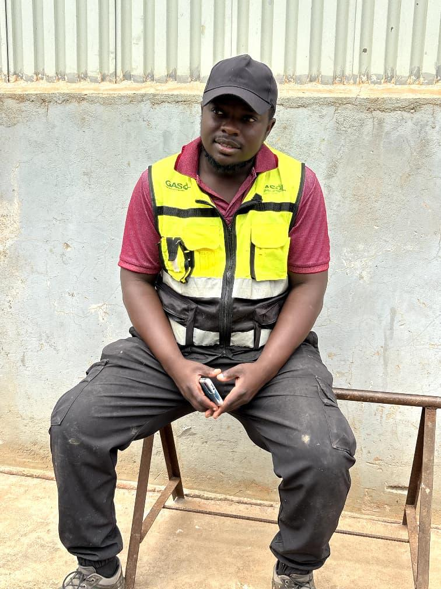
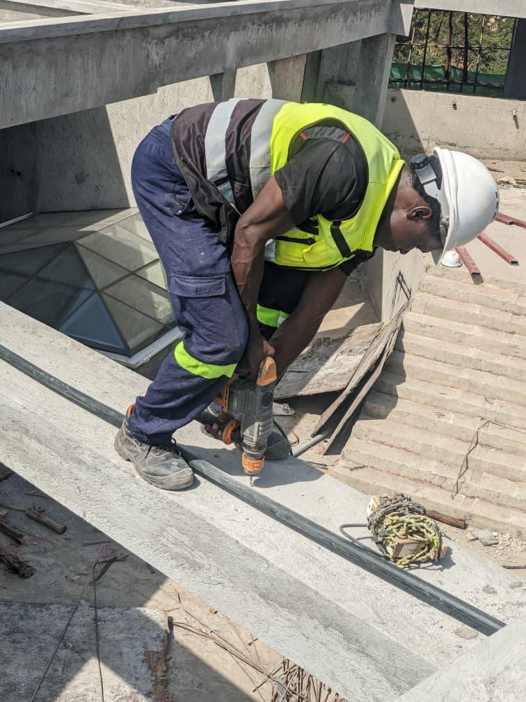
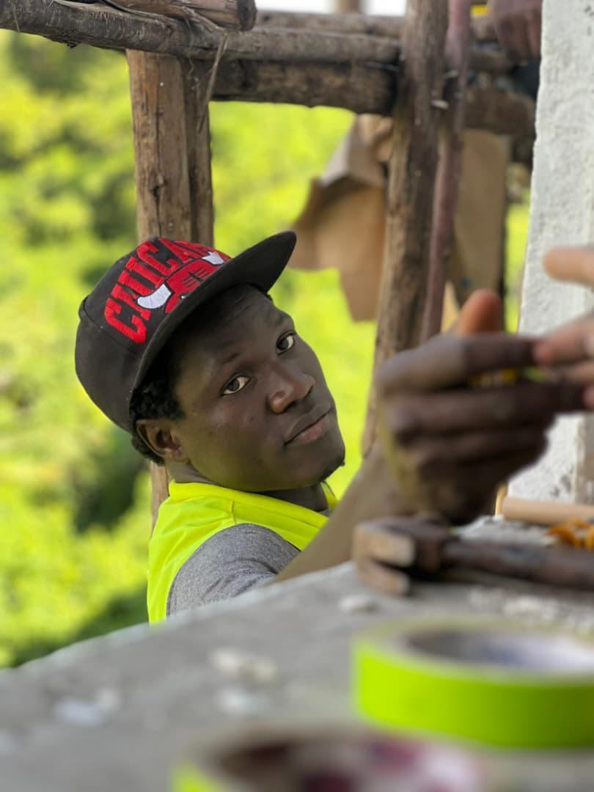
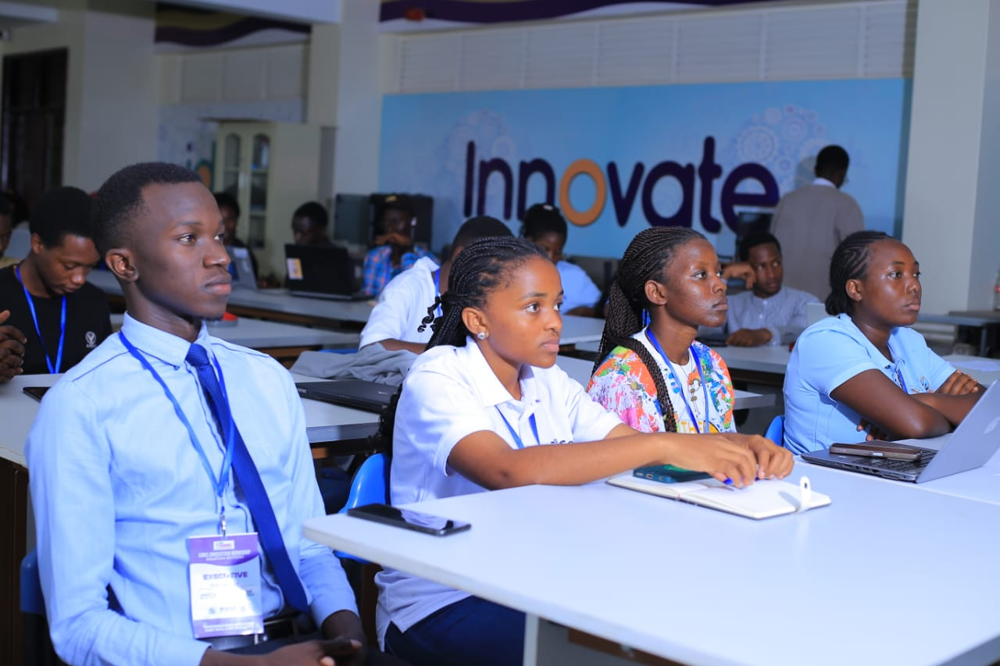

To empower vulnerable girls, women and youth, support orphans, and provide care, protection and accommodation to street children through sustainable community initiatives, education, skills development and opportunities for self-reliance.
To build a compassionate, empowered and inclusive community where girls, women, youth, orphans and street children live safe, dignified and productive lives, with young people equipped to become responsible leaders and positive agents of change.
DRIMORIA believes that young people are an important part of building stronger and more sustainable communities. We are committed to creating opportunities for youth through education, mentorship, skills development, leadership training and community participation.
We aim to help young people discover their potential, develop practical skills, become self-reliant and participate positively in the development of their communities.

Youths building skills, confidence and opportunities for a brighter future.

Supporting young people through mentorship, community support and opportunity.

Young people participating in activities that promote teamwork and positive change.

Helping young people discover their potential and become positive agents of change.
We care deeply about the wellbeing of those we serve and show genuine empathy in all our work.
We operate with honesty, transparency, and ethical principles in all our endeavors.
We focus on long-term solutions that create lasting positive change in communities.
We believe in enabling people, especially young people and vulnerable groups, to take control of their futures and achieve their potential.